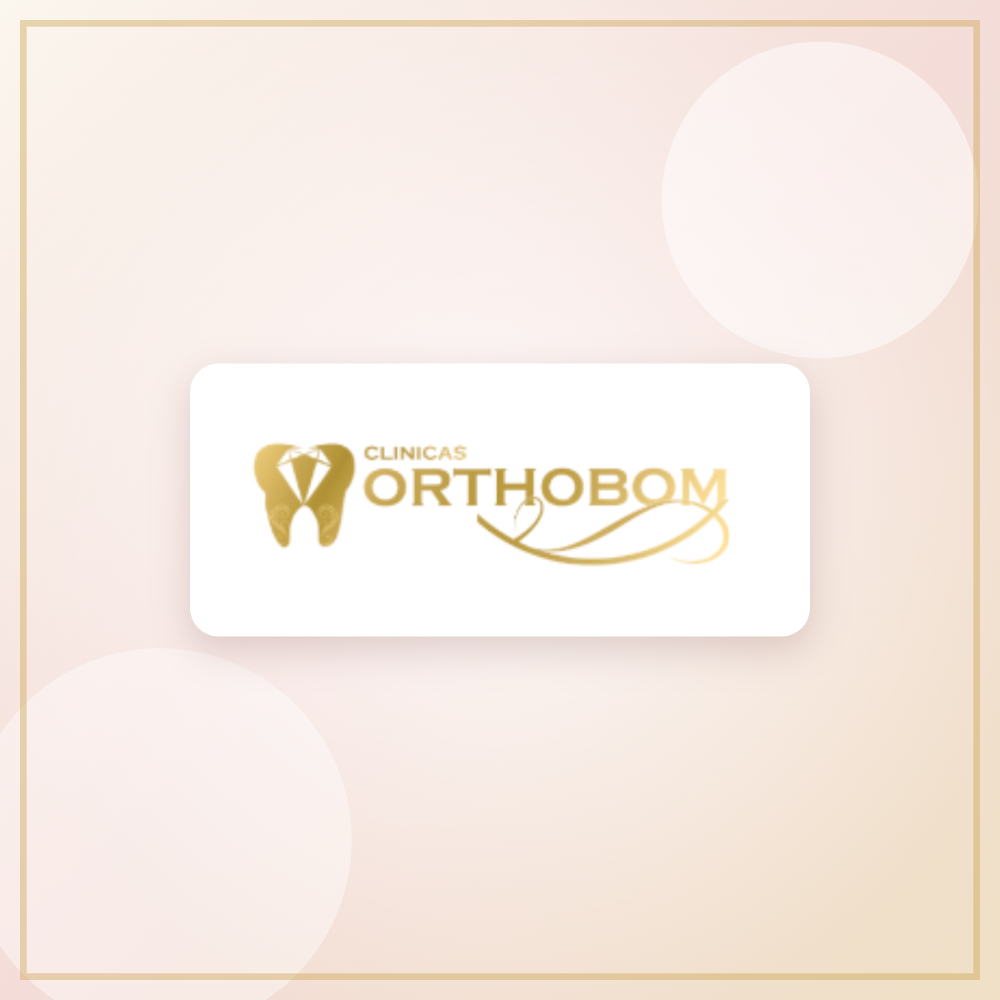

Odontologia sem medo · Osasco/SP
Seu tratamento inteiro sem medo, sem trauma e sem dor.
Com sedação consciente medicamentosa — monitorada e conduzida por especialista — você faz o procedimento tranquilo, sem o estresse e sem o barulho do motorzinho. Uma exclusividade da região.
Resposta rápida no horário de atendimento · Seg a sex 8h–18h · Sáb 9h–15h
- CROSP 104071
- Especialista em Implante
- Atendimento TEA
- 9 especialidades

Exclusividade da região
Poucos profissionais habilitados para sedação medicamentosa.
Nosso principal diferencial
Sedação consciente: você relaxa, a gente cuida do resto.
Se a ideia de sentar na cadeira já dá aflição, esse é o caminho. A dosagem é calculada pelo seu peso, tudo é monitorado do começo ao fim — e a maioria dos pacientes não lembra nem da anestesia.
Dosagem individualizada
Calculada pelo seu peso e histórico, com avaliação antes do procedimento.
Monitoramento contínuo
Sinais acompanhados durante toda a sessão por profissional habilitado.
Sem o barulho do motorzinho
Nada do estresse e da tensão que fazem você adiar o tratamento.
Também com óxido nitroso
Opção mais leve para reduzir a ansiedade, sem perda de consciência.
Sobre nós
Mais de uma década cuidando de sorrisos em Osasco.
Combinamos experiência e cuidado real para montar um plano de tratamento que faça sentido para você — no seu ritmo, com tudo explicado antes.
Você é bem-vindo aqui: da primeira avaliação ao acompanhamento, o atendimento é de gente que conhece o seu nome.
- Atendimento humanizado e individualizado
- Equipamentos modernos e ambiente acolhedor
- Especialistas de todas as áreas sob o mesmo teto
Especialidades
Tudo o que seu sorriso precisa, em um só lugar
O que sai da rotina, resolvemos com especialistas parceiros — você não precisa procurar outra clínica.
Endodontia
Tratamento de canal para preservar o dente natural e eliminar a dor com segurança.
Periodontia
Cuidado da gengiva e dos tecidos de suporte, prevenindo e tratando doenças periodontais.
Ortodontia
Aparelho fixo ou alinhadores transparentes para corrigir os dentes com conforto.
Cirurgia
Extrações, sisos e procedimentos cirúrgicos realizados com técnica e ambiente preparado.
Implante
Reabilitação completa com técnicas modernas, incluindo protocolo de carga imediata.
Odontopediatria
Atendimento acolhedor para crianças, com foco em uma boa relação com o dentista.
Sedação consciente
Conforto em procedimentos longos, com você acordado e responsivo — nosso diferencial.
Óxido nitroso
Relaxamento durante a consulta sem perda de consciência — ideal para reduzir a ansiedade.
Clínico geral
Limpeza, restaurações e consultas de rotina para manter a saúde bucal em dia.
Diferenciais
Por que os pacientes escolhem a Orthobom
- 01
Sedação consciente medicamentosa
Dosagem calculada pelo seu peso, tudo monitorado — e você nem lembra da anestesia.
- 02
Sem o estresse do motorzinho
Você não sente o barulho nem a tensão do atendimento, do começo ao fim.
- 03
Especialista em Implante
Planejamento individualizado e acompanhamento de ponta a ponta.
- 04
Protocolo de carga imediata
Implantes com prótese fixada no mesmo dia, em casos indicados.
- 05
Equipe multidisciplinar
Do clínico geral ao implante, especialistas de todas as áreas sob o mesmo teto.
- 06
Atendimento TEA
Ambiente preparado e equipe sensível ao Transtorno do Espectro Autista.
Depoimentos
O que dizem nossos pacientes
Depoimentos de exemplo — substituir pelos textos reais dos pacientes.
Eu adiava o tratamento há anos por medo. Fiz tudo com sedação e simplesmente não lembro do procedimento. Saí de lá sem dor.
Meu filho é autista e nunca tinha conseguido ser atendido. A equipe teve toda a paciência do mundo com ele. Gratidão enorme.
Coloquei os implantes com prótese no mesmo dia. Voltei a sorrir em fotos depois de muito tempo — valeu cada visita.
Dúvidas frequentes
Perguntas que a gente ouve todos os dias
Não achou a sua? Manda no WhatsApp — a gente responde sem compromisso.
Perguntar no WhatsAppSim. A dosagem é calculada pelo seu peso e histórico de saúde, e você fica monitorado durante todo o procedimento por profissional habilitado. Você permanece acordado e responsivo.
O objetivo é justamente esse: com a sedação, a maioria dos pacientes não sente nem lembra da anestesia. Procedimentos de rotina também são feitos com anestesia local confortável.
Recomendamos vir acompanhado e não dirigir depois da sessão. Todas as orientações de antes e depois são passadas na avaliação.
É uma avaliação: entendemos sua queixa, examinamos e montamos o plano de tratamento com as etapas e as opções explicadas antes de qualquer procedimento.
Sim. Temos odontopediatria e ambiente preparado para pacientes com Transtorno do Espectro Autista, com equipe sensível a esse atendimento.
De segunda a sexta, das 8h às 18h, e sábado das 9h às 15h. O agendamento é feito pelo WhatsApp ou pelo telefone (11) 3603-4032.
Destaques
Acompanhe o dia a dia no Instagram
Dicas, procedimentos e bastidores da clínica.
- Implantes
- Facetas
- Gengivoplastia
- Bruxismo
- Clareamento
- Dicas
- Localização
- Procedimentos
Localização e horários
Venha nos visitar em Osasco
Horário de funcionamento
Av. Cruzeiro do Sul, 1164
Rochdale, Osasco — SP
Telefone: (11) 3603-4032
E-mail: clinicas782@gmail.com
Agende sua consulta
Vamos cuidar do seu sorriso?
Atendimento direto pelo WhatsApp com nossa equipe. Tire dúvidas, confira horários e agende sua avaliação.